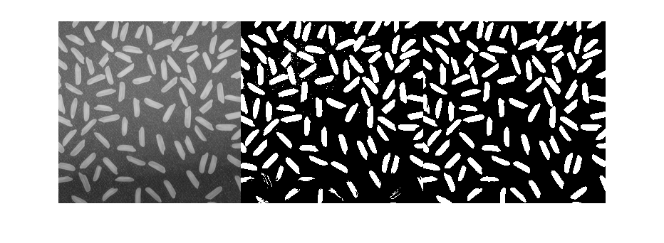
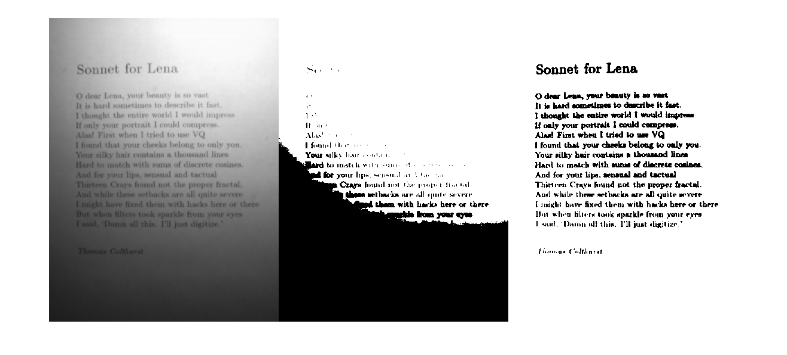

im1 = imread('rice.png');
[i2,m2] = imread('son1-1.gif');
imIn1 = im2double(im1);
imIn2 = ind2gray(i2,m2);
imIn2 = im2double(imIn2);
imageSequence1 = zeros(size(imIn1,1),size(imIn1,2),1,3);
imageSequence2 = zeros(size(imIn2,1),size(imIn2,2),1,3);
n = [15];
startX = floor(n(1)/2);
x = repmat(-startX:startX,[n(1) 1]);
y = repmat([-startX:startX]',[1 n(1)]);
r = sqrt(x.^2 + y.^2);
SE = zeros(n(1),n(1));
SE(r <= startX) = 1;
imageSequence1(:,:,1,1) = imIn1;
imageSequence1(:,:,1,2) = im2bw(imIn1,0.5);
tempImIn1 = topBottomHat(imIn1,SE,1);
imageSequence1(:,:,1,3) = im2bw(tempImIn1,0.2);
imageSequence2(:,:,1,1) = imIn2;
imageSequence2(:,:,1,2) = im2bw(imIn2,0.4);
tempImIn2 = topBottomHat(imIn2,SE,0);
imageSequence2(:,:,1,3) = ~im2bw(tempImIn2,0.06);
figure(1)
montage(imageSequence1,'size',[1,3]);
figure(2)
montage(imageSequence2,'size',[1 3]);
 